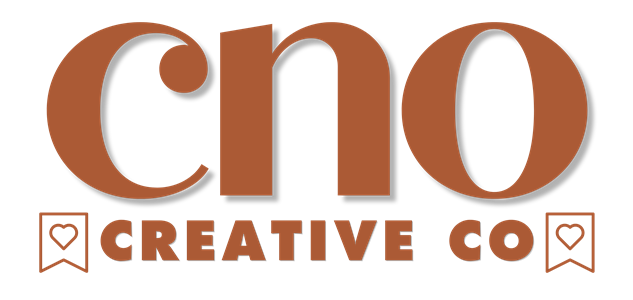

Monthly Analytics Report
Accounts CSV
Content CSV
Load demo
Export CSV
Client
Month
Print / PDF
Load an
Accounts CSV
, or click
Load demo
, to generate a report.
Add a
Content CSV
to unlock content intelligence. See the schema in the repo README.